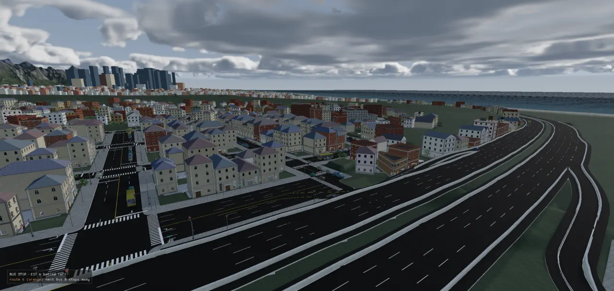
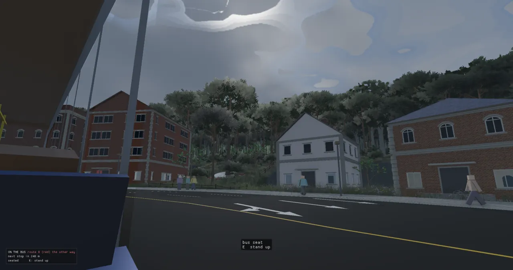
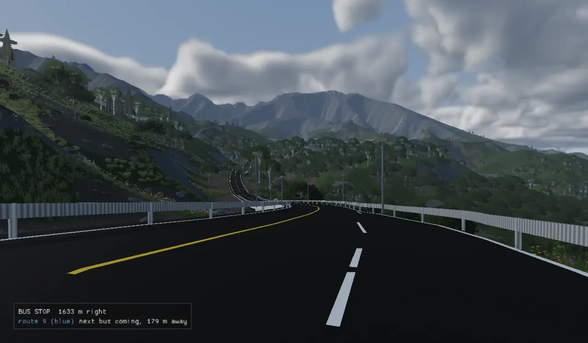
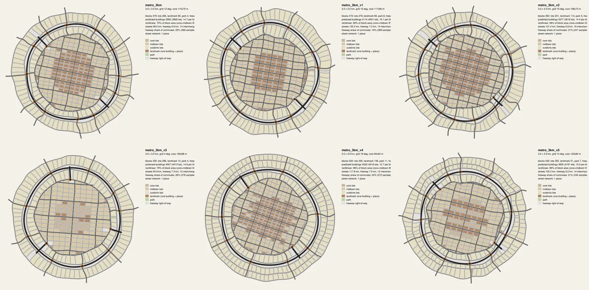
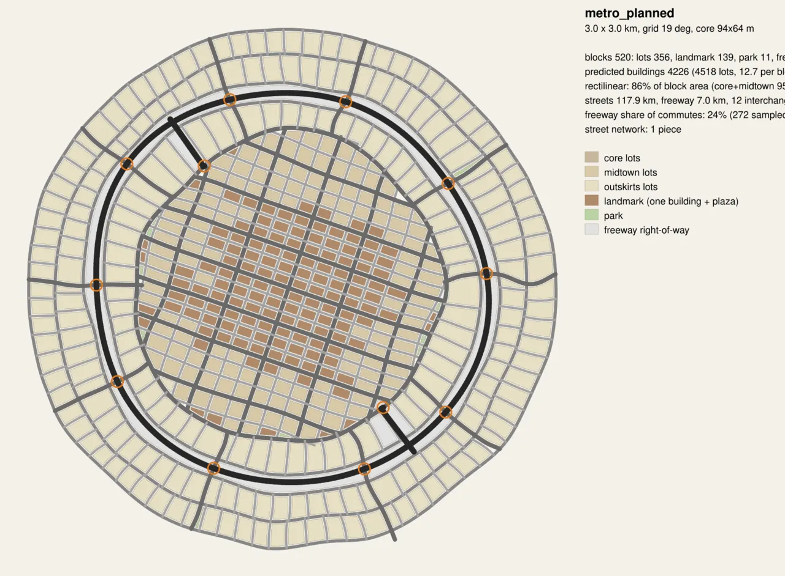

The road network
How a city's roads go from a few numbers in a brief to painted, walled, drivable asphalt with a nav graph on top. The one idea that makes it work: the lane is the atom. Every road is expanded into constant-width lane ribbons, the ribbons are unioned into one pavement, and every height question is answered by asking which lane owns that spot.

The problem
A road network has to satisfy several masters at once. It has to look right: lanes of the right width, kerbs, medians, paint that stops at junctions. It has to be right in three dimensions: a freeway crossing a street must clear it by a lorry's height, two streets meeting at a junction must meet at the same height, and no road may be steeper than its class allows. It has to sit on the ground: the terrain must be cut and filled to meet it, with no grass poking through the asphalt. And it has to publish data the rest of the engine runs on: a nav graph cars and walkers route over, a deck field things stand on, the holes between roads that become city blocks, and (since October) the tracks trains run on.
The hard part is that these interact. A junction's height depends on both roads' profiles; a profile depends on which crossings are bridges; whether a crossing is a bridge depends on the heights. Most of this page is about how the engine breaks that loop: first by solving heights per spine (a road's centreline) and agreeing them iteratively, and more recently by having the planner decide the intent up front so the builder only checks.
The whole arc, in one picture
Four programs touch a road before a player drives on it. The planner (city_plan) turns a
brief into a street and freeway layout. The design stage decides every road's height profile and every
crossing's kind. The lanes builder (lanes::build) turns the designed graph into lanes, a
pavement, meshes and a conformed ground. The city producer packs all of that into the level bundle, and
the loader reads it back through the RoadBuilder interface.
The road pipeline. Blue outlines mark the two stages that carry the most design: the vertical design (shared by planner and builder since ADR-0215) and the surface triangulation that welds every lane into one deck. A hand-authored lab scene starts at the third box.
The data: a graph of edges with classes
The builder's input is a lanes graph: JSON with a list of edges, each a path plus a class name, a table
of classes, a few global rules and a terrain description. A path is a polyline, arc, Bézier or an
offset of another edge (that is how a freeway's two carriageways follow one axis). Nobody authors a lane:
the class says how many lanes a road has, and the builder generates them. A ramp names its anchors: the
host edge it leaves and the one it joins, and the station along the host where its gore is. Here is the
hand-made grid_city lab scene's freeway and its two ramps:
{
"name": "grid_city",
"terrain": {"type": "flat", "bounds": [-130, 730, -120, 260]},
"classes": {
"freeway": {"w": 3.6, "fwd": 3, "back": 0, "shoulder": 2.5},
"ramp": {"w": 3.6, "fwd": 1, "back": 0, "shoulder": 1.2},
"arterial": {"w": 3.0, "fwd": 2, "back": 2, "sidewalk": 2.6},
"local": {"w": 3.5, "fwd": 1, "back": 1, "sidewalk": 1.8},
"divider": {"median": 1.5}
},
"rules": {"closing": 3.0},
...
{"id": "fw_axis", "class": "divider", "path": {"type": "bezier", "points": [[-120, -95], [150, -70], [450, -110], [720, -80]]}},
{"id": "fw_wb", "class": "freeway", "path": {"type": "offset", "edge": "fw_axis", "d": 7.0, "reverse": true}},
{"id": "fw_eb", "class": "freeway", "path": {"type": "offset", "edge": "fw_axis", "d": -7.0}},
{"id": "exit", "class": "ramp",
"from": {"edge": "fw_wb", "x": 300, "side": "right", "decel": 80, "taper": 72, "approach": 90}, "to": "v2",
"path": {"type": "bezier", "points": [[0, 0], [0, 0], [160, -68], {"edge": "v2", "s": 0, "normal": -4.5}]}},
{"id": "entry", "class": "ramp",
"from": "v2", "to": {"edge": "fw_wb", "x": 80, "side": "right", "aux": 60, "taper": 72, "approach": 90},
"path": {"type": "bezier", "points": [{"edge": "v2", "s": 0, "normal": 4.5}, {"edge": "v2", "s": 0, "normal": 4.5, "along": -30}, [0, 0], [0, 0]]}}
Loaded, that becomes a RoadLabGraph. (The Lab in the name is history: the builder
was the quarantined "lanelab" experiment until ADR-0089 folded it into the roads module.) Its two key types are
the class and the edge:
struct RoadClassSpec {
std::string name;
LaneLayout lanes;
double shoulder = 0, sidewalk = 0, median = 0; // rings outside the lanes (median: divider axes)
int rank = 1;
double gMax = 0.09, window = 40, thick = 0.5;
// CUT AND FILL (ADR-0116): 0 = the profile only fills (the grade-limited envelope from above, every
// city's roads); 0.5 = halfway between that and the envelope from below -- a mountain road that cuts
// through the rise it cannot climb instead of riding a viaduct off it (the island pass was 2.7 km of
// bridge in 4.2). Both envelopes keep the grade, so any blend does.
double balance = 0.0;
// indexed by EdgeRole: seam, median, vs street, elevated, at grade
std::array<BarrierSpec, 5> edges{};
// ...
bool track = false;
// ...
bool footway = false;
};
// ...
struct EdgeSpec {
std::string id, cls;
nlohmann::json path; // kept for ramp recomposition
RampAnchor from, to;
bool hasZMin = false; double zMin = 0;
double lotsFrom = -1, lotsTo = -1; // station range where the city may build lots along this edge (-1: all of it); the rest is right-of-way
std::vector<std::array<double, 4>> floorPts; // (x, y, z, half-span): the profile must clear z within half-span of that station, approached at design grade beyond
// a TRACK's holds that belong to the section joined to one of its ends (chainTrackFloors): (station, z, half-span)
// in this edge's stations -- before 0 or past its end -- so a lift's approach runs on across the joint
std::vector<std::array<double, 3>> chainFloors;
LaneLayout lanes;
// ...
// THE PLANNED ELEVATION (ADR-0215): the deck height along the resolved spine, every `profileStep` m from its start,
// as the design stage made it ("profile": {"step": 1, "z": [...]}). A graph whose roads all carry one is DESIGNED:
// the builder takes the heights as given and checks them, never re-designs them.
std::vector<double> profile; double profileStep = 0.0;
// resolved geometry and profile
std::vector<Vec2> xy; // spine, resampled at rules.step
std::vector<double> s, z, t; // station, deck height, terrain height along the spine
RampInfo ramp;
// Does anything meet this end? An OPEN end is pinned to the ground by the profile
// solve: gradeLimit only ever RAISES a profile, so a road that cannot follow its
// terrain otherwise floats — steep_climb began 65 m in the air over a valley floor
// it never came down to. Filled by build() before the profiles are solved.
bool openEnd[2] = {false, false};
int anchorIdx[2] = {-1, -1}; // spine index of the from-gore and the to-gore, when anchored
std::map<std::string, std::string> anchorLanes; // "from"/"to" -> host lane id
bool isRamp() const { return !from.edge.empty() || !to.edge.empty(); }
int laneCount() const { return lanes.fwd + lanes.back; }
double length() const { return s.empty() ? 0.0 : s.back(); }
};
Three fields in EdgeSpec carry most of the vertical story. floorPts are holds:
"at this point, the deck must be at least this high, flat over this half-span" (a bridge over a street, a river
crossing). profile is the planned elevation from the design stage; a graph whose roads all
carry one is "designed", and the builder takes those heights as given. xy/s/z/t are the resolved
spine: points every rules.step metres (1 m by default), their arc-length stations, the deck height
and the ground height under each.
The built-in class table (defaultClasses() in road_graph_spec.cpp) is the master knob,
as ADR-0051 asked: lane width and count, side bands, rank (who owns a shared spot), maximum grade, and the
smoothing window the profile is averaged over. A graph may override any of it.
| class | lanes | lane w | shoulder / sidewalk | rank | gmax | window |
|---|---|---|---|---|---|---|
| freeway | 3 one way | 3.6 m | 2.5 m shoulder | 3 | 3 % | 440 m |
| arterial | 2 + 2 | 3.0 m | 2.6 m sidewalk | 2 | 6 % | 120 m |
| local | 1 + 1 | 3.5 m | 1.8 m sidewalk | 1 | 9 % | 40 m |
| ramp | 1 one way | 3.6 m | 1.2 m shoulder | 0 | 9 % | 40 m |
| rail (track) | 1 + 1 | 4.0 m centres | — | 3 | 2.5 % | 400 m |
| light_rail (track) | 1 + 1 | 3.6 m | — | 2 | 5 % | 120 m |
| footway | 1 | 3.0 m | — | 0 | 60 % (stairs) | 20 m |
Built-in classes. Planned cities add their own (collector, rural, the
island's mountain class at 15 % with balance 0.5) in the graph's classes
block.
Lanes are the atom
expand() (lane_expand.cpp) turns every edge into Lanes. A class's lane
layout is written as the engine's own RoadSpec band list (sidewalk, shoulder, travel lanes per
direction, median), so a lane's lateral offset comes from the same cross-section model the rest of the engine
uses. Each lane is a constant-width ribbon: its centreline, its left and right edges, its stations. There are no
width tapers. A lane is born by sweeping its centreline out of a neighbour's and dies by converging
into one, so a turn pocket, a ramp's deceleration lane and a two-lane ramp's dovetail are all the same move.
struct Lane {
std::string id, kind, cls; // kind: through | turn | slip | aux | ramp | connector
int parent = -1; // index of the parent edge; -1 for connectors
double w = 3.5; int dir = +1; // dir: +1 along the parent spine, -1 against it
std::vector<Vec2> xy, left, right;
std::vector<double> s;
int srcLane = -1, dstLane = -1; double z0 = 0, z1 = 0; // connectors: the lanes joined and their end heights
bool isConnector() const { return kind == "connector"; }
};
struct LaneSet {
std::vector<Lane> lanes;
std::map<std::string, int> byId;
int find(const std::string& id) const { auto it = byId.find(id); return it == byId.end() ? -1 : it->second; }
// Ownership rank: connectors yield to every lane; otherwise the parent class rank.
double rank(int lane, const RoadLabGraph& g) const;
std::string roadOf(int lane, const RoadLabGraph& g) const;
};
Top: lane ids come from the band slots (f0 nearest the centre line, the last forward
lane at the kerb). Bottom: composeRamp builds a ramp's start by sliding a lane off the host's outer
lane with a smoothstep, then appends the authored path; an on-ramp mirrors it with an auxiliary lane.
Adjacency between lanes is derived, never authored: two lanes going the same way whose centrelines run
about one lane width apart for 20 m or more are neighbours (adjacency()). Connectors (lane end to a
point on another lane) are Hermite curves, generated from a one-line {"from", "to"}.
The vertical design: profiles that agree
Elevation lives on the spine, as z(s) per edge. For a through road it is built in three moves
(throughProfile): average the ground under the spine over the class's window, raise it to every
hold (a "tent" that falls away at design grade), then pass it through gradeLimit. Design grade is
80 % of the class maximum (kDesignGrade), so later corrections at junctions have headroom.
std::vector<double> limitDescents(std::vector<double> z, const std::vector<double>& s, double gmax) {
for (size_t i = 1; i < z.size(); ++i) z[i] = std::min(z[i], z[i-1] + gmax * (s[i] - s[i-1]));
for (size_t i = z.size() - 1; i-- > 0;) z[i] = std::min(z[i], z[i+1] + gmax * (s[i+1] - s[i]));
return z;
}
std::vector<double> gradeLimit(const std::vector<double>& z, const std::vector<double>& s, double gmax) {
std::vector<double> a = limitDescents(z, s, gmax), neg(z.size()); for (size_t i = 0; i < z.size(); ++i) neg[i] = -z[i];
std::vector<double> b = limitDescents(neg, s, gmax);
for (size_t i = 0; i < z.size(); ++i) a[i] = std::max(a[i], -b[i]);
return a;
}
limitDescents sweeps forward then backward, never letting a sample sit more than
gmax · ds below its neighbour; doing it to z and to −z and taking the max
gives the lowest profile that stays at or above the input and never exceeds the grade. It only fills:
every rise steeper than the grade lifts the deck, which then comes down at the grade. That is right for a city
street; on a mountain it put Saltwood's pass on 2.7 km of piers in 4.2 km. ADR-0116 added the class option
balance, which blends toward the mirror envelope from below (−gradeLimit(−z), which
only cuts). Both keep the grade, so any blend does.
Sketch of throughProfile's ingredients (not to scale). A hold is a cone at design grade
with a flat top as wide as the road it clears, so the max of cones is still grade-legal.
Profiles solved one road at a time do not meet. So designRoads runs an agree loop: at every
shared node the ends take a common height; where one road ends on another's interior it takes the host's height;
where two roads cross at grade the higher-ranked road is authoritative and the other takes a smooth bump. Holds
and ramps are re-imposed after each round. Then grade-separated crossings are lifted until the upper deck clears
under_clearance (5 m) plus its slab and girders.
for (EdgeSpec& e : g.edges) if (!e.isRamp()) throughProfile(e, terrain, g.cls(e));
chainTrackFloors(g, R.endpointTol); // (needs every edge's stations) a track's holds run on across its joints
for (EdgeSpec& e : g.edges) if (!e.chainFloors.empty()) throughProfile(e, terrain, g.cls(e));
for (EdgeSpec& e : g.edges) if (e.isRamp()) rampProfile(g, e, terrain); // ramps need heights to take part in crossing consistency
// where the roads meet, found once (only the heights move from here on)
const std::vector<CrossingMeet> meets = crossingMeets(g);
auto agree = [&](bool first) {
// ...
double best = 1e300;
int stalls = 0;
std::vector<std::vector<double>> keep;
for (int it = 0; it < 120; ++it) {
double mm = nodeConsistency(g, R.endpointTol, R.bridgeH), xm = crossingConsistency(g, meets, R.bridgeH, R.rampLevelDz);
chainTrackFloors(g, R.endpointTol);
for (EdgeSpec& e : g.edges) if (!e.isRamp()) applyFloors(e, g.cls(e)); // lifts survive the blends
for (EdgeSpec& e : g.edges) if (e.isRamp()) rampProfile(g, e, terrain); // hosts moved
const double cur = std::max(mm, xm);
if (first && it == 0) rep.nodeMismatchBefore = cur;
if (cur < best - 1e-4) {
best = cur; stalls = 0;
keep.clear(); keep.reserve(g.edges.size());
for (const EdgeSpec& e : g.edges) keep.push_back(e.z);
} else if (++stalls >= 4) {
break;
}
if (cur < 0.005) break;
}
if (stalls >= 4 && keep.size() == g.edges.size()) {
for (std::size_t i = 0; i < g.edges.size(); ++i) g.edges[i].z = keep[i];
for (EdgeSpec& e : g.edges) if (e.isRamp()) rampProfile(g, e, terrain);
}
};
agree(true);
The comment in that loop records a measured turning point: a city whose crossings all have to agree needs
many rounds (metro_hills: 35 cm of mismatch at 12 iterations, 0.5 cm at 120), but some inputs diverge
(living_city went from 410 cm to 710 cm). Keeping the best round makes both kinds end well. Finding where roads
meet is an all-pairs pass; on the island (3,866 edges) it cost 23 minutes when every round repeated it, so the
meets are found once (crossingMeets, ADR-0112) and only the heights move.
Intent, not inference: the design stage
Until October the builder inferred what each crossing was from the heights: two roads already
bridge_h (4 m) apart were a bridge, closer ones were made to agree. The island's rocky rebuild
took four 1.8-hour builds, each finding the planner and builder disagreeing: the planner sized ramps from bare
ground while the builder cut the link 16 m in; the builder read two overlapping roads 2.7 m apart as an
overpass nobody planned. Glenn's direction (2026-10-20): "neither system is guessing. We should be able to
plan out the road and elevations. The planner and builder should know the intent of the roads so it's not
guessing and use the same models."
ADR-0215 did it in three steps. Step 1 lifted the vertical design out of lanes::build into
designRoads(graph, ground), unchanged (proved byte-identical on 15 scenes). Step 2 let the graph
carry intent: a top-level "crossings" list (each a CrossingSpec: bridge with
which road is over, or at_grade) and a per-edge planned "profile". A crossing the
stage finds that is not on the list fails a check, "crossings are as planned", named with its place. Step 3 made
the planner use it: one crossing policy, shared.
auto kindOf = [&](const EdgeSpec& a, const EdgeSpec& b, bool aEndsOnB, bool bEndsOnA) {
if (g.cls(a).track || g.cls(b).track) return "bridge";
if ((a.cls == "freeway" && !b.isRamp()) || (b.cls == "freeway" && !a.isRamp())) return "bridge";
if (g.cls(a).footway || g.cls(b).footway) {
const bool footEnds = (g.cls(a).footway && aEndsOnB) || (g.cls(b).footway && bEndsOnA);
return footEnds ? "at_grade" : "bridge";
}
return "at_grade";
};
The island planner (city_plan island-cities, island-rail, city-rail)
now plans the crossings, runs the design stage and writes the profiles into the scene before it goes out. On
island 8: 182 crossings planned (116 bridges, 66 at grade), none left out, the stage taking 224 s. The stage
itself is cheap, 2–3 minutes of a 95-minute full island build (ADR-0215).
Still owed (ADR-0215 "Not yet"). The island planner's link and ramp choices still use
their own grade constants (island_world.cpp sets gRamp = 0.09,
rampPeak = 0.06) instead of reading the class table and the design stage.
One pavement, one triangulation, levels by height
With heights known, the builder works in plan. Each lane's ribbon becomes a polygon (its footprint,
grown 1 cm so neighbours weld). Closing fills gores and kerb returns, but only where two footprints meet
at the same level. Shoulders, sidewalks and medians are ring differences around the roads, cut only at their own
level (so a sidewalk runs on under a bridge: a fix of 2026-10-15). All polygon booleans go through Clipper2,
reached only from geom2d.cpp.
Then the step that replaced three earlier mesher families: one constrained Delaunay triangulation (CDT) over every lane outline. Each triangle asks which lanes cover its centroid, clusters those lanes by height, and emits one triangle per cluster, owned by its highest-ranked lane. An overpass is two clusters (two levels); a merge is one.
const auto& tri = T.tris[ti]; Vec2 c = (T.verts[tri[0]] + T.verts[tri[1]] + T.verts[tri[2]]) / 3.0;
double area = 0.5 * std::fabs(cross(T.verts[tri[1]] - T.verts[tri[0]], T.verts[tri[2]] - T.verts[tri[0]])); if (area < 1e-6) continue;
cover.clear();
for (int liI : grid.at(c)) {
const size_t li = static_cast<size_t>(liI); const Box2& b = boxes[li];
if (c.x < b.minX || c.x > b.maxX || c.y < b.minY || c.y > b.maxY) continue;
if (!prepared[li].contains(c)) continue;
cover.emplace_back(H.own(liI, c), liI);
}
if (cover.empty()) continue;
std::sort(cover.begin(), cover.end()); clusters.clear(); clusterZ.clear();
for (const auto& cz : cover) {
if (!clusters.empty() && cz.first - clusterZ.back() < g.rules.sameLevelDz) { clusters.back().push_back(cz.second); clusterZ.back() = cz.first; }
else { clusters.push_back({cz.second}); clusterZ.push_back(cz.first); }
}
for (const auto& cl : clusters) {
int owner = cl[0]; for (int m : cl) if (rankKey(m) > rankKey(owner) || (rankKey(m) == rankKey(owner) && m < owner)) owner = m; // ties within a road: the lowest lane index
lc.emit.push_back({static_cast<int>(ti), owner});
for (int m : cl) for (int q : cl) { if (q == m || L.roadOf(q, g) == L.roadOf(m, g)) continue; if (rankKey(q) > rankKey(m)) lc.partners[static_cast<size_t>(m)].insert(q); }
}
Grade separation is a per-triangle height decision, not a 2-D planarisation, so an overpass stays an overpass by construction. Same-level clusters also produce the partner relation used below.
Vertices are then welded by plan position and height into connected Surfaces, and the checks run
on them: no cracks (an edge used by one triangle inside a surface), no non-manifold edges, closed boundary loops.
Where two lanes meet, whose height wins?
A deck vertex takes the height of its owning lane's spine by projection (DeckHeight::own:
continuous, never nearest-station). Near a higher-ranked partner at the same level, it blends toward that
partner's blended deck over blendLen (20 m), recursively up the rank chain, so a connector, a
local lane and an arterial lane agree exactly wherever they touch. This is the answer to the old union mesher's
"nearest-spine winner-take-all" heights, which produced 164 % grade steps on junction diagonals (ADR-0083).
double DeckHeight::blendTo(double z, const std::vector<int>& partners, const Vec2& p) const {
static thread_local int depth = 0; struct Guard { int& d; explicit Guard(int& x) : d(x) { ++d; } ~Guard() { --d; } } guard(depth);
if (depth > 12) throw std::runtime_error("lanelab: partner chain too deep — the partner relation is not a strict order");
// The NEAREST partner within blendLen pulls with a smoothstep of distance and takes over exactly at
// the seam (d = 0), using the partner's DECK height so chains agree. Nearest only: a weighted mix of
// several partners is smoother inside a lane but is no longer exact where two surfaces meet.
double Lb = g_.rules.blendLen; int best = -1; double bd = std::numeric_limits<double>::infinity();
for (int q : partners) { double d = distanceToLane(q, p, Lb); if (d < bd) { bd = d; best = q; } }
if (best < 0 || !(bd < Lb)) return z;
double w = bd / Lb; w = w * w * (3 - 2 * w);
// A partner pulls only where the two are at the same level. Partnership is per ROAD pair (a ramp and
// the street it lands on), but the blend radius is 2D, so a ramp 20 m from that street and 4 m above
// it was dragged down to it — a 3.8 m dip in the deck with the pier, placed from the profile, standing
// 2.8 m proud of the surface (Glenn's cube at the end of the on-ramp). Fade the pull to nothing between
// same_level_dz and bridge_h of vertical separation.
// At the seam itself the two surfaces must meet exactly whatever their profiles say (a slip lane two
// metres off its cross street on a hill still lands on it), so the fade only applies away from the
// partner: full pull within kSeam of it, the level fade beyond.
const double zp = deck(best, p), gap = std::fabs(zp - z), lo = g_.rules.sameLevelDz, hi = std::max(lo + 0.5, g_.rules.bridgeH);
double f = gap <= lo ? 1.0 : gap >= hi ? 0.0 : 1.0 - (gap - lo) / (hi - lo); f = f * f * (3 - 2 * f);
// ...but only a seam the two can actually share: a road BRIDGING its partner (Glenn, 2026-10-02, Third and
// Dogwood: pass8 partners the street where they meet at grade, then crosses 8 m over it -- and within 3 m of
// the street in plan the seam rule dragged the bridge down to it, a vertical wall of asphalt) is
// grade-separated there, not a seam. Past bridge_h of separation the seam rule stands down.
constexpr double kSeam = 3.0; const double nearSeam = bd >= kSeam || gap >= hi ? 0.0 : 1.0 - bd / kSeam;
const double pull = (1 - w) * std::max(f, nearSeam);
return pull * zp + (1 - pull) * z;
}
double DeckHeight::deck(int lane, const Vec2& p) const { return blendTo(own(lane, p), partners_[static_cast<size_t>(lane)], p); }
Every clause in that function is a bug Glenn hit while driving: the level fade is "the cube at the end of the on-ramp" (a ramp 4 m above a street 20 m away was dragged down 3.8 m); the seam guard is "Third and Dogwood" (a road that bridges its partner was pulled down into a vertical wall of asphalt).
Junctions, paint and signs
The lanes builder has no special junction mesh. A junction is simply where lane footprints overlap at one
level: the closing pass fills its corners, the CDT triangulates it, and ownership by rank decides whose height
it rides. What makes a junction look like one is paint, in deck_mesh.cpp:
- Junction boxes. Lane paint stops inside any face a crossing street shares at the same level. Every street approach gets a zebra crosswalk and a stop bar where the crossing road's rank is at least its own.
- Lane arrows (ADR-0108). The junction's legs are the street edges leaving its box at the approach's level; each leg's angle makes it a left, straight or right (within 35° is straight). The moves go to lanes by position, painted 7 m before the stop line and again at 30 m on long blocks. Glyphs are built in plan coordinates, so the world's mirror flips them with the roads.
// LANE ARROWS: what each of an approach's lanes may do at a junction, given the moves the junction // offers (hasLeft/Straight/Right, in plan terms) and whether its leftmost / rightmost lane is a turn // pocket. Lanes are listed plan-left first. The usual assignment: the leftmost lane turns left (and // goes straight unless it is a pocket), the rightmost turns right (likewise), the middle ones go // straight -- or, with no straight on offer, split left and right. buildMeshes paints these. struct LaneMoves { bool left = false, straight = false, right = false; }; std::vector<LaneMoves> assignLaneMoves(std::size_t lanes, bool hasLeft, bool hasStraight, bool hasRight, bool leftPocket = false, bool rightPocket = false);


Signals live in the city sim, not the builder: SignalController phases a junction from its
conflict graph. ADR-0109 added protected left turns: where opposing approaches share a green and an approach has
two or more lanes, the slot opens with a 7 s lead arrow plus 2.5 s yellow, during which only those lefts move.
Cars read their own movement (CitySim::moveFor), and the head gets a fourth lamp. The painted arrows
mark the lanes the protected left is taken from.
Road signs are planned as data (ADR-0107: planIslandSigns; advance, exit, gore, route,
distance, entrance, wrong-way and limit signs; 221 on island 8) and drawn from one face layout: the same
SignFace renders the SVG sign sheet and is rasterised into atlas pages cached by content hash
(ADR-0110, world/road_sign_build.h), on posts or gantries 5.6 m over the road.
Structure, walls and guardrails
Where the deck stands more than bridge_h (4 m) over the ground, the builder places a pier every
pier_spacing (24 m), sliding it up to half a bay to keep its 2.6 m square and 1.5 m of clearance off
every other road and every platform (Glenn: "the pillars that hold up the freeway intersect with the road").
Elevated freeway and ramp lanes get a box girder underneath.
Barriers follow an edge grammar. Each freeway or ramp deck edge is classified by what it faces
(EdgeRole), and the class table says what to build for each role: nothing, a wall (parapet), or a
guardrail. Runs are found the way sidewalks are: offset the union of footprints, walk the resulting rings,
resample at 1 m, and split into arcs of one kind (2026-09-08: on metro 775 runs fell to 319, covering 98 % of 26.5 km).
enum class EdgeRole : uint8_t {
Seam = 0, // same-level pavement just beyond: not an edge of the structure at all, never walled
Median, // faces the other carriageway of the same freeway across the median
VsStreet, // faces a street, collector or arterial within reach — the freeway/city separation
Elevated, // outward edge of a deck standing clear of the ground: structure, needs a parapet
AtGrade, // outward edge sitting on the ground with nothing beyond: today gets nothing
Count_
};
ADR-0117 opened the grammar to any class that authors a barrier, with min_drop: build a rail only
where the ground 5 m out falls that far below the deck (a mountain road's guardrail stands where there is
somewhere to fall). ADR-0220 then found the island's freeway had inherited that drop rule and, because grading
holds the ground beside it at deck height, carried rails on only 1.4 km of 109.6 km of at-grade edge. The freeway
and ramps went back to the class default: a guardrail the whole way along at grade.
Roads up mountains
Glenn asked in September how roads get built "around and up and down mountains", and the honest answer was
that they did not. ADR-0103 added routeOnTerrain (terrain_route.h), after Galin et al.
2010: A* on an 8 m grid with moves in 32 directions (every coprime step up to three cells), the state being
(cell, incoming direction) so turns are priced exactly. Grade above the design limit is priced as
earthwork, not forbidden; only hardGrade is a wall. A route may not crowd itself: two
stretches more than 80 m apart along it must stay 20 m apart in plan, else the search reruns with that spot
blocked.
struct TerrainRouteParams {
double cell = 8.0; // grid step (m)
double maxGrade = 0.08; // the road's grade: above this each move pays steeply...
double hardGrade = 0.14; // ...and above this it may not go at all
double gradeWeight = 400.0; // cost multiplier on (grade - maxGrade)^2 per metre
double flatWeight = 2.0; // a mild preference for flatter ground at any grade (x grade per metre)
double turnWeight = 6.0; // cost per radian^2 of turn between consecutive moves (x cell)
// cost per (change of grade)^2 between consecutive moves, per metre: ground whose slope along the
// route changes smoothly is ground a road's smoothed profile can HUG -- over jagged ground the
// profile bridges the dips (decks on piers) and cuts the humps
double bendWeight = 0.0; // off by default: on metro's jagged range it traded switchbacks for grade (ADR-0103)
double maxTurnDeg = 60.0; // sharper than this between two moves is not allowed
double margin = 500.0; // the search box: the endpoints' bounds grown by this (m)
// optional: where the road may not go (water, a city block); true = blocked
std::function<bool(double x, double y)> blocked;
};
The router only lays the line; the builder needed no change, because its profile, cut and fill, retaining
and decks on piers already are what a mountain road is. A brief's world.mountainRoads lists
{from, to, class, maxGrade, hardGrade}; from snaps to the nearest street end. What did
change was how much it bridges: balance (above) let the pass cut as well as fill (bridge
2.7 → 1.5 km, ADR-0116), and ADR-0119 added lookouts: lay-bys scored by the drop toward a town or a lake, built
as a 70 m layby pocket lane that carries the guardrail.

Two routers. The first grade-limited router, routeRoad in
terrain_field.cpp (ADR-0045, earthwork dial ADR-0047), still exists behind the Lua binding
terrain.route. It searched 8 neighbours, which made switchbacks literal 45° staircases (ADR-0048's
"unnatural curves"). The planner and island use routeOnTerrain.
Rivers and bridges
ADR-0104 made the river the world's: the planner, the lanes ground grid and the level evaluate one hydrology.
In planToLanesScene every non-freeway street is sampled every 2 m and each wet run judged: inside a
street and at most 180 m long, a bridge (a hold at water level + 6 m, flat across the run + 14 m; the
builder raises a deck and sets piers, unchanged); a junction in the water pairs its straightest two streets into
one bridge; anything else is cut back to the banks. Blocks stand back from the water by the water mesh's outline
grown 6 m. Streets a ramp anchors to are never cut. ADR-0054's idea, that a water crossing is just a crossing
with water as the lower deck, is what made this need no new builder code.
The ground: the builder grades a corridor
A lane-built city answers GroundPlan::replace: the builder conforms its own copy of the
ground (a grid at the graph's terrain.res) while it paves, with one owner per grid node (lanes, then
road envelopes), a skirt and 1:2 slopes, and cut daylighting outward. Two later decisions shaped what the player
stands on:
- The streets set the ground (Glenn approved 2026-09-29: "the terrain looks good ... smooth now").
An earthwork field pinned to at-grade decks and held at zero under elevated ones, each street's strip as a
flatten record, building pads at the front street's height, and no block terraces on lane cities. The level
tests
level_print_road_edges_meet_the_groundmeasure it. - The builder's grid is a corridor, not the island (ADR-0221). The island's grid is 20 m; the weathered ground is 2.44 m. The loader used to draw the 20 m grid everywhere, erasing all finer detail. Now the grid is the ground only where a deck reaches or the build changed it by more than 5 cm, plus 40 m, with natural detail fading in over 60 m more: corridor 8 % of nodes, full detail on 84.5 %. Laying the full-detail ground everywhere instead raised the poke census (terrain through a deck) from 3,713 to 120,203 samples.
One height convention, and the drawn section
Downstream code needs "how high is the road here?" constantly. The answer is the deck field
(RoadDeckField), one UnionSpine per graph edge, published in the bundle. Two fixes
made it trustworthy:
- ADR-0136: every
NavLinkcarries both forms at both ends, the absolute deck Y (elevA/B, to draw a car) and height above ground (aboveA/B, for every same-level test), resolved once at load by the system that owns the ground. Before, a car at a ramp foot compared a deck Y against street cars' heights above ground. - ADR-0223: each lane is drawn at its own blend toward the roads it meets, so a carriageway is not level across. The spine now carries the drawn heights at its left and right edges, and one function reads the section.
// WHAT RUNS ON IT: a road (traffic, parked cars, the street a walker is on), a TRACK or a FOOTWAY (a station's // way in). The last two are drawn decks with their own profile, but nothing on a street ever stands on them: the // deck field's queries skip them (they are not indexed), so a car under a viaduct never reads the rail above it // (Glenn, 2026-10-12: "cars weirdly stuck in the tracks"). The earthwork still rides them -- they are structure. enum class Use : uint8_t { Road = 0, Track = 1, Footway = 2 }; Use use = Use::Road; // ... // THE DRAWN SECTION (a lane-built deck, ADR-0223): absolute deck Y at the carriageway's LEFT and RIGHT edges // (left = fwd rotated +90 in XZ, as crossSlope's; parallel to `points`; EMPTY = level across, yAbs alone). The // lanes builder draws each lane at its own blend toward the roads it meets, so a carriageway is not level // across: one centreline height left 3364 of 151k metro samples 25 cm off the drawn pavement, this 139. std::vector<double> yLeft, yRight; // Deck Y on segment (i, i + 1) at parameter t, `lateral` metres to the left of the centreline: the profile, // the superelevation, and the drawn section lerped centre -> edge on that side (held at the edge beyond it). double sectionY(std::size_t i, double t, double lateral) const;
Measured on metro: cars' worst sink went from −0.51 m to −0.12 m, and traffic samples past 25 cm from 3 to 0.
The use field is why a car under a light-rail viaduct no longer takes the rail's height
(ADR-0159).
Driving on the left
The lane model is right-handed in plan coordinates: forward lanes lie on the spine's right. But plan (x, y) maps to world (x, z), which is a reflection, so on screen traffic keeps left, like the UK or Japan. Glenn (2026-09-23): "Driving on the left is fine", and on 2026-10-02: "I want to keep it that way." Anything a driver reads as left or right (turn arrows, an exit tab's side, signal lamps) is mirrored from the plan's geometry. Lane 0 is next to the centre line (the offside), the last lane is the kerb lane.
// Right-hand normal of a (unit) travel direction: rotate -90 deg. With Vec2 // mapping to world XZ and +Y up, perp() = {-y, x} is the LEFT (+90) normal, so // the right side is its negation: {y, -x}. // The KERB side of travel. Named for the maths, not the road: in world x/z (y up) (dir.y, -dir.x) points to the // driver's LEFT -- traffic keeps left, UK/Japan style (Glenn, 2026-10-02: "I want to keep it that way"). inline Vec2 rightOf(const Vec2& dir) { return {dir.y, -dir.x}; }
Watch the comments. Older comments still say "right" where they mean the kerb side
(the parkOffset note in nav_graph.h, and the first three lines above). The signal code
says "traffic keeps right" in the nav frame, which is the plan's handedness. Check lane offsets in the code,
not the prose.
The planner: a city designed as data
Before ADR-0092, nothing decided what a city was: lanes_tool from-level replayed the old lattice
recipe and kept what survived conversion (182 of 419 segments on metro v2), and blocks were whatever holes the
pavement left. Glenn: "we need some way to design the city we want and build a road graph and block layout and
evaluate it as data before it gets built", and "Can you build maps before trying to construct anything?"
The answer is three artefacts in procgen/city/plan/. A Brief (core grid block size and
angle, midtown warp, outskirts rings and spokes, freeway radius, widths, relief). A CityPlan: the planar
street graph, the freeway graph and interchanges, and every block as a face plus its buildable polygon, carrying
a district and a use. A PlanScore from the engine's own parcel walk and router, so a plan that scores
well builds the way it scored. Six candidate cities with maps come out of one city_plan generate
run in about seven seconds.
enum class BlockUse : uint8_t { Lots, Landmark, Park, RightOfWay };
const char* blockUseName(BlockUse u);
struct PlanBlock {
Poly2 face; // the street-centreline face
Poly2 buildable; // inset by each street's half-width + sidewalk
int district = 0; // 0 core, 1 midtown, 2 outskirts
BlockUse use = BlockUse::Lots;
// Scores (evaluatePlan).
Real area = 0; // buildable area (m²)
Real rectangularity = 0; // area / oriented-box area (1 = a rectangle)
Real narrow = 0; // oriented-box short side (m)
int edges = 0; // corners of the simplified buildable polygon
int lots = 0; // a dry-run of the engine's parcel walk at the district grain
int predictedBuildings = 0;
};

city_plan generate … --variants 6: six variants of one brief, each with its scorecard
(out/plans, 2026-09-22). Glenn picked v4 (bottom middle), which became metro_planned.
evaluatePlan. Rendered from the planner's SVG.planToLanesScene then writes the lanes graph: streets as chains (a curve the planner drew as forty
edges is one road), the freeway as two carriageways, diamond interchanges from the one diamond generator
(interchange.cpp). For the island, islandLanesScene stitches every place's scene with
the freeway, the pass and the mountain roads into one scene, with a --window to build one square of
it (Saltwood's 4.4 km window built in 80 s, ADR-0112).
The planner also scores the messes the builder used to discover: corridor overlaps, the worst junction, tight turns and paved overlap (2026-10-09, after Glenn saw "many roads that merged together"; island overlap went from 15.9 km to 0.39 km).
From builder to world: the interface
The roads module's interface (road_builder.h, ADR-0089) is what makes the rest of the engine
indifferent to how roads were made. A builder answers four questions; the lanes builder answers them by reading
the city bundle, because a lane-built city is produced once per level (0.05 s for a lab, about 25 minutes for the
island) and the loader, rt_bake and the editor must all get the same city to the byte.
// What every builder owes. struct RoadProducts { std::vector<RoadMesh> meshes; // the carriageway, kerbs, sidewalks, markings RoadDeckField deck; // the surface things stand on CurbBandAudit bands; // sidewalk loops — the city map draws these // The two things a builder that paves a whole CITY knows and a mesher does not. // Both empty from the lattice: a lattice level grows its lots from the road // graph's faces and has no freeway right-of-way to keep them out of. RoadGraph row; // freeway + ramp right-of-way: the lot pass's keep-out std::vector<Poly2> holes; // un-inset pavement holes: the city's blocks std::vector<RailTrack> rails; // track lanes, for whatever runs trains (empty from the lattice) }; // ... class RoadBuilder { public: virtual ~RoadBuilder() = default; virtual const char* name() const = 0; // The surface, built on `ground` (already carved/replaced). virtual RoadProducts build(const RoadBuildInput& in) const = 0; // What the ground must become before the surface exists — see GroundPlan. // The terrain pre-pass asks this against the NATURAL ground. virtual GroundPlan ground(const RoadBuildInput& in) const = 0; // The centrelines everything routes on: nav, traffic, furniture, signs, map. virtual RoadGraph navGraph(const RoadBuildInput& in) const = 0; // Is that graph THE level's road graph? The lattice says no: its navGraph is // navRoadGraph(), the same function the loader applies downstream to every // RoadEntity in the world, so publishing it here would only pre-empt that. A // builder that paves a city says yes — its graph is the twin of what it // actually built, and nothing downstream can re-derive that from the recipe. virtual bool ownsNavGraph() const { return false; } };
The nav graph is not the plan: it is a twin derived from what was actually built
(roadTwin): corner-only nodes, class and width per edge, deck heights as absolute elevations on
freeway and ramp nodes, tracks and footways left out. There are two of it on purpose: the sim's twin carries
each edge at its travel lanes' width (ADR-0115: cars were driving on the shoulder), and the lot pass keeps a
wider one at the clearance widths (roads/lotnav). City blocks are not extracted from any graph:
they are the holes in the paved surface (≥ 2000 m²), inset by the level's sidewalk, Glenn's "one
representation" rule of 2026-09-05.
The builder's main types. Everything downstream reads the graph's resolved spines or the pavement, never the JSON.
auto rp = std::make_unique<Result>(); Result& r = *rp; r.graph = std::move(graph); RoadLabGraph& g = r.graph; const Rules& R = g.rules;
std::array<double, 4> bounds = g.bounds(); HeightField terrain = makeTerrain(g.terrain, bounds); r.hasTerrain = g.terrain.type != "flat";
// 1. lanes (ramps compose from anchors)
stage(0, "lanes", 0.0); r.lanes = expand(g); r.timings["lanes"] = secondsSince(t1); t1 = std::chrono::steady_clock::now(); stage(1, "profiles", 0.0);
// 2. profiles: through roads, agree at nodes and crossings (iterated), then ramps, then connector ends
{ const DesignReport dr = designRoads(g, terrain); r.nodeMismatchBefore = dr.nodeMismatchBefore; r.nodeMismatchAfter = dr.nodeMismatchAfter; r.nodeMismatchWhere = dr.nodeMismatchWhere; r.undeclaredCrossings = dr.undeclared; }
// ...
r.timings["profiles"] = secondsSince(t1); t1 = std::chrono::steady_clock::now(); stage(2, "footprints", 0.0);
// 3. footprints, closing, layers; 4. arrangement and surfaces
r.heights = std::make_unique<DeckHeight>(g, r.lanes);
buildFootprints(g, r.lanes, *r.heights, r.pavement); r.timings["footprints"] = secondsSince(t1); t1 = std::chrono::steady_clock::now();
{ std::vector<std::vector<Ring>> outers(r.lanes.lanes.size()), holes(r.lanes.lanes.size());
for (size_t li = 0; li < r.lanes.lanes.size(); ++li) for (const Polygon2& p : r.pavement.footprints[li]) { outers[li].push_back(p.outer); for (const Ring& h : p.holes) holes[li].push_back(h); }
r.heights->setFootprints(outers, holes); }
std::function<bool(double)> surf = [&](double f) { stage(3, "surfaces", f); return true; };
buildSurfaces(g, r.lanes, *r.heights, r.pavement, opts.threads, opts.progress ? &surf : nullptr); r.timings["surfaces"] = secondsSince(t1); t1 = std::chrono::steady_clock::now(); stage(4, "terrain", 0.0);
// ...
// 6. terrain
if (r.hasTerrain) {
const auto tb = std::chrono::steady_clock::now();
r.terrain = bakeGrid(terrain, g.terrain, bounds);
r.timings["terrain.sample"] = secondsSince(tb);
const auto tc = std::chrono::steady_clock::now();
conformGrid(g, r.lanes, *r.heights, r.terrain, r.conform, r.pavement.decks);
r.timings["terrain.conform"] = secondsSince(tc);
const auto tv = std::chrono::steady_clock::now();
terrainVsDeck(r.pavement.decks, r.terrain, r.conform);
r.timings["terrain.vsDeck"] = secondsSince(tv);
}
r.timings["terrain"] = secondsSince(t1); r.seconds = secondsSince(t0); stage(4, "done", 1.0);
return rp;
How it got here
The road system in nine steps. Blue: the lane builder's arrival. Amber: the lattice's retirement and the design stage.
Early generators (June 2026). The first roads were a deformed grid, then radial
ring-and-spoke, then a tensor field (after Chen et al. 2008) that blends radial into grid with no seam, because a
tensor's eigenvectors have no head or tail. Terrain-awareness came three ways: contour coupling in the tensor
field, pruning streets steeper than the grade while keeping the network connected (a naive prune shattered it
into ~400 pieces), and a stitch backstop. On a hill study scene that took walkable streets from ~40 % to ~68 %
(ADR-0046). For single long roads, a grade-limited A* (ADR-0045), then a cutFill dial from "hug the
terrain" to "cut through it": length ×2.30 at 3.0 to ×1.01 at 0.02 on one test peak (ADR-0047).
One road model, many meshers (June–August). ADR-0048 observed that "a radial
pattern is splines, a grid is splines", and made the curve the source and the graph a derived view. The meshers
then went through four families: per-edge pads (self-overlapped at T-junctions), an SDF roadbed (welded by
rounding, but no lane parameterisation so lanes could never be textured), a polygon-union "weldSolid" (it
reconstructed heights per vertex from the nearest spine and produced 164 % grade steps), and the swept
lattice, which swept each chain and filled each junction with one patch. ADR-0051–0054 added layers, classes
with access policy, crossing templates and a clearance solver, the vocabulary the lanes builder still uses
(Rules::underClearance, bridge_h, the idea that a river is just a lower deck).
Why lanes won (September–October). lanelab began as a port of a Python
prototype (~/Claude/roads/roadgen, 47 invariant tests) of Glenn's framing that the lane is the atom.
It was built behind a link boundary with a gate: beat the lattice on a mesh-quality ratchet or be deleted
(ADR-0083). It needed two dependencies the repo had ruled out, Clipper2 and CDT, which Glenn signed off on
2026-09-09. Rather than a contest, the two ran side by side, chosen per entity (ADR-0085), then per data key
("builder": "lanes", ADR-0089). Glenn drove it, liked the freeway, and asked for more cities on it.
On 2026-10-14 he asked to "deprecate that old lattice builder ... and kill it off": every shipped city was
converted, four were retired because lanes exposed what the lattice's plan-union and terrain drape had hidden
(near-parallel 24 m arterials overlapping, streets steeper than any class allows), and about 110 lattice-only test
cases went with it. Interactive road editing in the editor was shelved as GitHub #103: the lanes builder makes a
whole city at a time.
Measured turning points worth remembering. A pass that prints "nothing to do"
is the one to instrument first (the cover pass dropped whole lanes because it boxed only a footprint's first
polygon). Holding three separate points flat sags 0.17 m between them; a hold needs a half-span. Using bridge
height as the line between "a ramp meets a street" and "a ramp clears it" made two rules see-saw a frontage road
3 m per iteration; the line is ramp_level_dz, 1.5 m. Prepared footprints took the island's cover
pass from 9.5 minutes to 1 s in the window (ADR-0112).
Where to look
- src/engine/procgen/city/roads/lanes/lanes.cpp —
build(), the six stages; invariants;designedGraph - …/lanes/road_graph_spec.h — the graph, classes, rules, crossings, platforms
- …/lanes/lane_expand.cpp — roads to lanes, ramps from anchors, pockets, connectors
- …/lanes/road_design.cpp — the design stage and the crossing policy
- …/lanes/vertical_profile.cpp — profiles, holds, node and crossing agreement, ramps
- …/lanes/pavement.cpp and deck_height.cpp — footprints, the CDT, levels, welding; heights and partner blends
- …/lanes/deck_mesh.cpp — render meshes: decks, kerbs, paint, arrows, walls, guardrails, piers, track kit
- …/lanes/terrain_conform.cpp, block_audit.cpp — conforming the grid; blocks, pads, the earthwork field and street finish
- …/lanes/road_twin.cpp — the nav and lot twins
- …/lanes/city_producer.cpp — bundle sections,
kLanesBuildTag(bump it when output changes) - src/engine/procgen/city/roads/road_builder.h, lanes_builder.cpp — the module interface and the lanes builder behind it
- src/engine/procgen/city/plan/ — brief, plan, score;
plan_scenewrites the lanes scene - src/engine/procgen/city/terrain_route.h — the mountain router
- src/apps/citysim/traffic_signal.h — signals and protected lefts; src/engine/ai/nav_graph.h —
NavLink - tools/lanes_tool.cpp —
build(summary, PASS/FAIL invariants, .glb/.svg/stats;--quick --probe x y r --holes --walls),design [--plan-crossings],from-level,twin,blocks - tools/city_plan.cpp —
generate,scene,island-cities,heights,rivers,level-world - tests/test_lanes.cpp — e.g.
lanes_a_planned_bridge_clears_a_road_it_stood_level_with,lanes_a_balanced_profile_cuts_as_well_as_fills,lanes_a_freeway_at_grade_wears_its_guardrails,lanes_the_road_grid_keeps_a_corridor_and_the_hills_their_detail; alsotest_city_plan.cpp,test_terrain_route.cpp,test_traffic_signal.cpp - assets/lanelab/ — lab scenes:
grid_city,ring_city,valley_viaduct,hill_junction,freeway_cross,steep_climb,merge_taper,system_interchange;tools/lanes_corpus.py --checkruns the corpus against a baseline - …/lanes/README.md — the builder's own log of every drive and fix since September
- Docs: docs/road-module-plan.md, road-mesher-research.md, freeway-rules.md (the legacy corridor freeway, marked as such)
Debug switches. LANELAB_DUMP_EDGE=<id> prints an edge's solved profile against its
ground; LANELAB_THREADS caps the parallel mesher; RT_DIAMOND_WHY=1 and
RT_PLAN_WHY=1 trace the planner; RT_XC_TRACE prints level crossings that won't agree;
RT_POKE_DUMP / RT_POKE_SITE explain terrain poking through a deck;
RT_LANES_EARTHWORK=0, RT_LANES_FINISH=0, RT_FINISH_LEVEL=1 are grading A/B
switches; RT_NOCACHE=1 builds the city in memory (use it for any before/after comparison: the bundle
key cannot see code). Older pages: How the city is built,
the city plan (both predate parts of this).